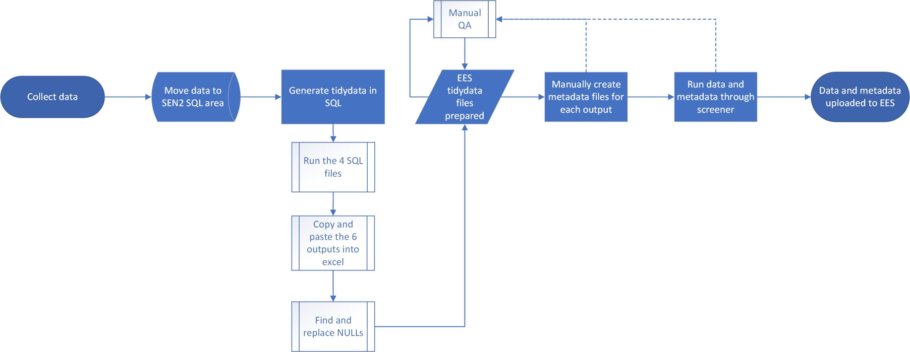
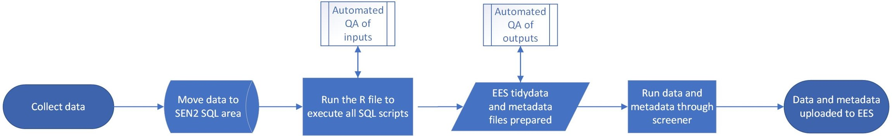
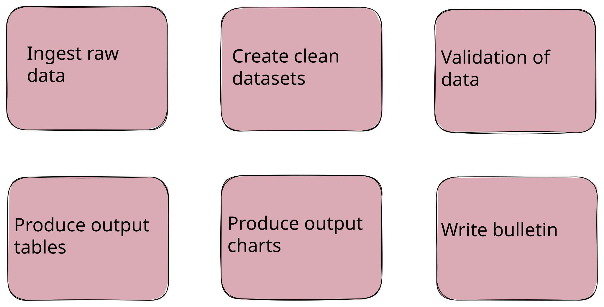
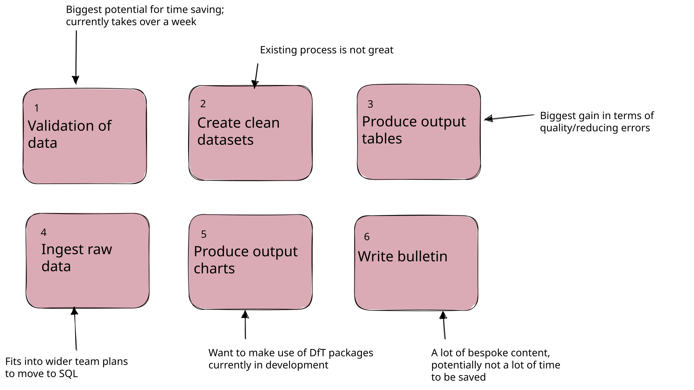
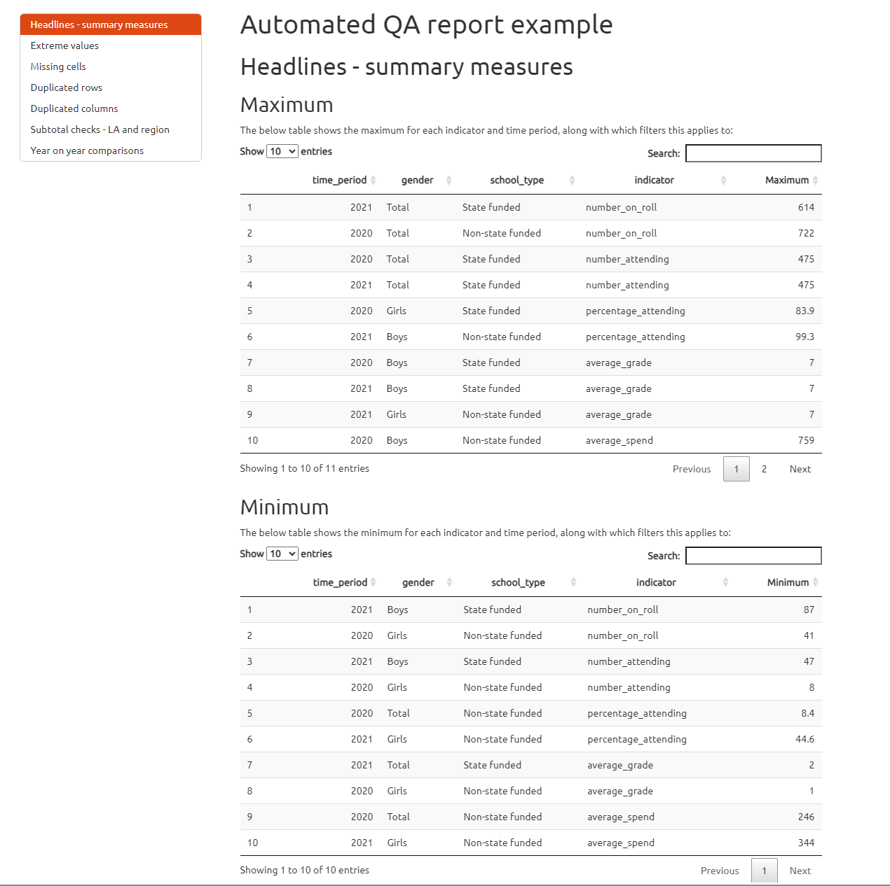
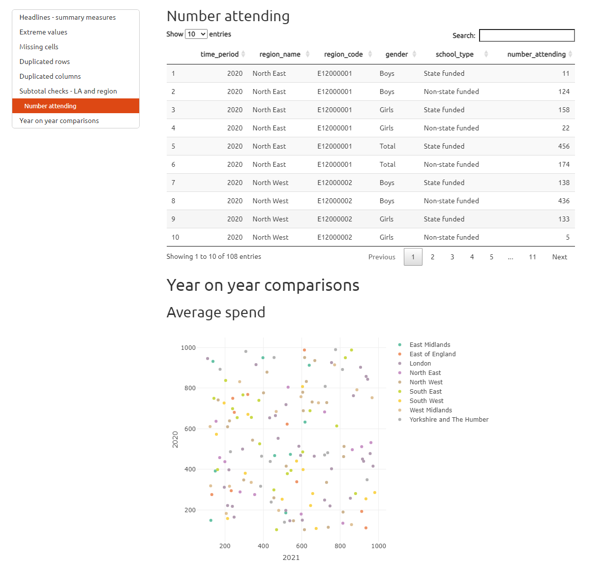

library(DBI)
# Step 1: Define SQL variables
sql_server <- "MY_SQL_SERVER_NAME" # replace with your SQL server name
database <- "MY_DATABASE_NAME" # replace with your database name
# Step 2: Connect to SQL Server
con <- dbConnect(odbc(),
Driver = "ODBC Driver 17 for SQL Server",
Server = sql_server,
Database = database,
Trusted_Connection = "yes"
)
# Step 3: Pull data from SQL Server
my_table <- tbl(con, DBI::Id(schema = "dbo", table = "my_SQL_table")) %>% # replace with your SQL table name
# filter and tidy your data before using collect()
filter(my_column == "my_value", my_column_2 == "my_value_2") %>%
select(my_column_3, my_column_4) %>%
collect()RAP for managers
Statistics Development Team
Department for Education
What is RAP?
Reproducible Analytical Pipelines are simply about using automation to our advantage when analysing data, and ensuring we are transparent when we do!
We already have analytical pipelines and have done for many years. The aim of RAP is to:
- Automate all of the parts that we can,
- Increase efficiency and accuracy,
- Create a clear audit trail to allow analysis to be easily reused if needed.
Why bother? - case studies
Implementing RAP best practices will free up time for us to focus on the parts of our work where human input adds true value.
“The previous process with the two excel workbooks would take a couple of months to run, whereas now it can be run in a matter of hours.”
- Matt Jago, Ops & infrastructure
“[The improvements have] reduced the human errors and also mean analysts and LA colleagues’ time can be spent on more valuable tasks.”
- Family hubs research and analysis team
“The script itself is not complicated, but it removes the risk of human error and reduces the production time to minutes. The time saved can then be dedicated to further quality assurance.”
- RAAC response analyst
Why bother - pipeline before/after

↓

What it means for managers
On our RAP expectations page, we have pulled out the expectations for analyst managers from the cross-government RAP strategy, which include:
- build extra time into projects to adopt new skills and practices where appropriate
- learn the skills they need to manage software
- evaluate RAP projects within organisations to understand and demonstrate the benefits of RAP
- mandate their teams use RAP principles whenever possible
What we expect from managers
We therefore have a baseline expectation for official statistics and we expect managers to mandate this, while ensuring that their teams and themselves can develop the required skills:
How to track your progress
The RAP self-assessment tool allows statistics producers to assess against the department’s RAP standards.
Importantly for managers, you can monitor your team’s progress towards achieving the RAP baseline by viewing ‘RAP progress by area’ and ‘overview of latest responses’.
You should have entries for every publication you manage, and these should be updated either;
- When you make updates to your processes that change your responses or,
- once a year minimum even if you’ve made no changes.
This is so we always have an accurate picture of RAP in the department to share with analytical leaders.
Slido
Introduction to Git, GitHub and Azure DevOps
Introduction to Git
Git is a piece of software designed for version control, i.e.
- Tracking changes;
- Undoing changes;
- Maintaining parallel variants of code.
Git works with repositories:
- A repository (or repo) is just a folder that contains all of the version controlled files of a project.
- It can have multiple sub-folders that will also be tracked.
Git records all the version control information within a hidden folder called .git
GitHub & DevOps
GitHub and Dev Ops provide a space to store and interact with a repository. They allow you to:
- Store a central shared back-up of your repository;
- View the files;
- View the history;
- Create and view different branches (variants) of the code;
- Use management tools such as Issues logs (on GitHub) or Kanban boards/task boards (on DevOps);
- Create pull requests (requests to review changes before merging them), review code, and get feedback from collaborators;
- Perform automated QA and deployment of code (e.g. sending a dashboard live).
GitHub and DevOps
GitHub and DevOps are generally not a place to:
- Run your code;
- Edit your code (although there is some basic text editing functionality you can use).
What’s the difference between git, GitHub and Azure Dev Ops?
- Git is the underlying software that you, GitHub and Azure DevOps use, providing the commands to record changes, create branches, merge branches, undo changes, etc.
- GitHub provides a public space to store a shared copy of your repository, with features to plan, manage and share your work publicly.
- Azure DevOps provides a secure space to store a shared copy of your repository, with features to plan, manage and share your work internally within the DfE.
Benefits of Git
- Collaboration: Get support from team and wider community by easily sharing code (our team find it much easier to support you if we can just go and clone your repo…)
- Code QA via reviews and automated checks
- Continuity
- Can undo changes
- Can try different methodologies in a properly controlled way
Why not use shared folders?
Version control: Shared folders lack good/detailed version control which leads to;
- Messy folders with multiple versions of files (file_v1, file_v2, file_final, File_final_FINAL etc.)
- Potential to overwrite/lose work
- No ablity to view a files history and see who made previous changes and why.
Git and platforms like GitHub and Azure DevOps provide robust tracking of all changes, who made them, and their commit message, ensuring continuity and auditability.
- Collaboration in shared folders can be tricky and require duplication of files. Branching with Git is a safe and sensible way to work collaboratively with parallel versions of files that can eventually be merged.
- Documentation: ‘Run-notes’ or README files in shared folders can be easily lost, outdated, or even not exist at all! Git projects often automatically generate README.md files for you to complete, and they render in Azure DevOps/GitHub automatically, providing instantly-seen documentation for anyone who opens the repo. Using a markdown (.md) file instead of .txt or word also gives additional abilities like linking to other pages or files and easily including code snippets.
Getting set-up
GitHub: Just create your own GitHub account, no IT support needed! You should use your work email address (or link it to an existing account if you have one) for GitHub accounts you will use at work.
Azure DevOps: Fill in the DevOps IT service request form. See the help page on how to fill in the DevOps IT request if you need support filling it in!
Git Basics
What does interacting with git look like?
You can use git from with R-Studio, Visual Studio and GitHub Desktop using nice graphical user interfaces. At their heart though, all of these run the git command line functions. The key ones that you’ll call on a lot (however you choose to interact with git) are:
git clone repository-urlgit add .git commit -m "This is a message describing my latest changes"
git pushgit pullgit checkout -b branch-namegit merge branch-name
These 7 commands are the main things you need to start tracking your projects using git.
Clone
When you want to start working on a project that is already on GitHub or Azure DevOps, you need to clone the repository. This means creating a copy of the repository on your local machine. That means that you can work on the files on your device, and you choose when to update the online version with your changes (it does NOT update online automatically).
Push, Pull, Commit
Push, pull and commit are the three main commands you will use in Git.
Push:Send your changes to the shared repositoryPull:Get the latest changes from the shared repositoryCommit:Record your changes in the repository
A typical workflow would therefore be:
- Open the project on your device and ensure you’re in the correct branch,
Pullto ensure that any changes made to the online version by others are pulled down onto the version you are working on,- Make your own changes and save them.
- Commit your saved changes, and include a useful commit message to explain what you have done.
Pushyour changes to the shared repository when you’re ready for others to see them.
Branches
Branches in Git are like parallel universes of code.
Your main branch should be your most up-to-date, working version of your code. If you want to make updates or develop new features, you should create a new branch. This essentially creates a copy of the main branch in a different place.
Working on your new branch means that you can try new things and edit your code without affecting the main branch - allowing others to continue using the main, working branch if needed! It also means two people could both create their own branches and do development work simultaneously without affecting each others work!
Pull requests
Imagine you have finished all of the development work in your branch, and you are ready for your changes to be moved into the main branch! To merge your changes into the main branch, you create a pull request. This is a request for someone else to review your changes and approve them before they are merged.
Visualise the process
clone the repository to your device…
clone the repository to your device…
Make changes locally
commit the changes
…
push the changes
Pull the changes to your device…
Make changes locally
commit & push the changes
Pull the changes to your device…
Task 1
Azure DevOps treasure hunt!
Open the RAP for managers Azure DevOps repo!
Your task is to explore the repo in order to find the 2 mistakes and 6 hidden letters which spell the mystery-word!
Here are some hints to get your started:
- The README file should be the first thing you look at in any repo (and should be of a high quality)
- As a manager, you will often be asked to approve pull requests.
Quiz!
How to Write Good Review Comments
Why Code Reviews Matter
- Ensure Quality: Catch issues early, reduce bugs.
- Share Knowledge: Improve team skills and understanding.
- Encourage Collaboration: Foster teamwork and better practices.
Structure Your Review
- Understand the Context:
- Read the PR description and associated documentation.
- Run the code locally if necessary (check that it works!)
- Be Constructive:
- Suggest alternatives instead of just pointing out problems.
- Add comments or questions to specific lines.
- Praise and Critique:
- Highlight good practices.
- Explain why changes are needed.
- Ask questions where you require clarity - chances are if you don’t understand something, then others looking at it won’t either! This is a sign that documentation or comments need improving!
Things to look for
- Correctness: Does the code do what it’s supposed to do? Are there any bugs or errors (e.g. an incorrect or missing filter)?
- Readability: Is the code easy to understand? Is the logic clear? Do you understand the intention of the code?
- Maintainability: Is the code easy to update in the future? Are there hard-coded values that will need changing in future spread throughout (bad practice), or are all variables that will change stored in one obvious place?
- Performance: Is the code efficient? Are there any unnecessary steps or loops? Can you see repetitive code that could be made into a function?
- Documentation: Are there comments and documentation where needed? Are they clear and helpful? If you don’t understand a decision or piece of code, ask for clarification! The likelyhood is that others will also be confused by it and it needs additional comments or documentation.
Example: Requesting Clarity and Improved Comments
Pull Request Code:
Review Comment:
I’m unclear on why the threshold is hardcoded to 80 here. Can you explain why 80 was chosen, and whether this is a departmental or industry standard? This might need to be more flexible for future updates. It would be useful to add a comment explaining the significance of the 80 threshold here and whether it will change in future. This will help future maintainers understand the code.
Suggested Revision:
Example: Identifying errors
Pull Request Code:
Review Comment:
The comment on line 3 states that students over 18 should be filtered out, but the code
filter(age > 18)keeps students over 18 instead of removing them. This error will be carried through the pipeline, making the outputs inaccurate. I think the filter condition should befilter(age <= 18).
Suggested Revision:
Example: Suggesting Improvements
Pull Request Code:
Review Comment:
This code is repetitive and if we add more subjects, we’ll need to duplicate the same logic for each one. This makes the code harder to maintain and more error-prone. Could you write a function to calculate the weighted average score to reduce the risk of errors and make the code easier to maintain?
Suggested Revision:
Example
Pull Request Code:
Review Comment:
The year
2023is hardcoded in several places: filters, messages, and filenames. If we need to update this code for a different year, we’d have to make changes in every instance, which is error-prone. Consider defining the year as a variable at the top of the script or in avariable_changescript. This will allow you to update the year in one place, making the code easier to maintain and reuse.
Suggested Revision:
Azure Devops Boards
What are Azure DevOps Boards?
Azure DevOps Boards are a project management tool that allows you to plan, track, and discuss work across your teams.
Key points:
- Boards are associated with teams rather than repositories.
- This means multiple repositories can be tracked on one team board.
- They create a central place to monitor progress, assign tasks, and collaborate efficiently.
Features of Azure DevOps Boards
Azure DevOps Boards offers powerful tools for project management:
- Work Items: Track individual tasks, bugs, or features. Each work item has a title, description, and status, and can be assigned to a team member. You can also add tags, attachments, and comments to work items to provide additional context, and even link work items to branches, commits and pull requests.
- Backlogs: Prioritised lists of work items that need to be completed as part of a project. You can add work items to the backlog, assign them to team members, and set priorities. The backlog helps you plan and track the progress of your project, and ensures that work is completed in the correct order.
- Sprints: Use sprint planning for time-boxed projects. You can move work items into sprints, assign them to team members, and track progress. Sprints help you break down work into manageable chunks, and ensure that work is completed on time.
- Kanban Boards: Visualize work in progress with a drag-and-drop interface (similar to trello).
Benefits for RAP
Why use Azure DevOps Boards for Reproducible Analytical Pipelines?
- Visibility: Track all projects in one place.
- Accountability: Assign tasks with clear ownership.
- Collaboration: Comment directly on tasks to resolve issues or clarify requirements.
- Documentation Link to code, data, and other resources to provide context.
- Integration: Link directly to R scripts, SQL code, or other artifacts in your repositories.
- Organisation - Keep all your work in one place, and easily see what needs to be done next.
Let’s Practice Together!
Task: Explore Azure DevOps Boards
Open the RAP for managers Azure DevOps repo and navigate to the Boards tab (In the sidebar, expand the boards section and select boards within that!).
Click on the + New Item button and give it a title. Hit Enter to save it!
Now expand it by clicking on the title. Fill in the details for the task, including the description and assignee (you can assign it to yourself or the person you’re sat next to!). Explore the different features like tags, attachments, and comments. Close the expanded view and click the three dots on the task to explore eve more features like creating a branch.
Move a task: Update the task’s progress by dragging it to a new column.
Collaborate: Comment on someone else’s task to provide additional context, ideas or instructions.
Goal: By the end of this exercise, you’ll feel confident using Azure DevOps Boards to manage your projects and collaborate effectively.
The structure of a RAP project
The RAP MVP
The Analytical Function guidance states that in order to achieve these benefits, at a minimum a Reproducible Analytical Pipeline must:
- Minimise manual steps. Manual steps include copy and paste, point and click or drag and drop operations. Where it is absolutely necessary to include a manual step in the process this must be fully documented as described below.
- Deepen technical and quality assurance processes with peer review to ensure that the process is reproducible and that the below requirements have been met
- Guarantee an audit trail using version control software, preferably Git
- Be open to anyone. This can be done most easily by using file and code sharing platforms
- Follow existing good practice for quality assurance – guidance set by departments or organisations, and by the Analysis Function teams and Data Quality Hub for the Analysis Function and Government Statistical Service
- Contain well-commented code and have documentation embedded and version controlled within the product, rather than saved elsewhere
In the DfE
In the DfE we have our own good, great and best practice standards for RAP. Our minimum requirement is that everyone publishing statistics meets the baseline expectation.
In the DfE: In practice
In practice, this roughly means:
- You are using code to perform all calculations and data manipulation removing all manual steps - this can be a combination of SQL and R code, but one
run_all.Rscript should source all code from both languages. Code should be efficient, well documented (good comments!) and easy to understand.
- The code should not require lots of edits or changes on a typical run. Any variables that are expected to change (like year) should be defined in one obvious place (i.e. a
variable_change.Rscript) and only require updating in that one place.
- The code should be stored in a Git repository on Azure DevOps, with a sensible file structure and a completed readme document. You should be using branches and pull requests to make changes and reviewing each others code before merging.
- Automated QA and summaries should be generated on each run (ideally in a quarto or markdown report that is easily readable and helps to visualise the data). This could include pass/fail tests and graphs of trends to help spot outliers.
- The final outputs for EES should pass all checks in the data screener. If they fail, amendments should be made to the code rather than the files directly, that make the required changes.
Structure the process
Typically, processes can be broken down into the following structure:
- Ingest raw/input data
- Clean and transform data
- Validate/QA the data
- Produce your output tables
- Produce output charts/dashboards/other products
- Write a commentary/report

Prioritise
Chapter 3 in the DfT Strategic Reproducible Analysis in Coding book provides some great prioritisation guidance:
While it’s tempting to work through these steps in chronological order, with well-structured code it’s not necessary to do this, and you can start coding on the section which is the highest priority. Prioritisation of these ‘chunks’ can be done taking into account:
- Which of the sections offer the biggest benefits?
- Which sections represent the biggest potential for time-saving (creating a snowball effect in terms of more development time)?
- Can some sections fulfill a dual development purpose (i.e. automate table creation while also making it accessible)?
- What other processes are dependent on this chunk (i.e. if you don’t have a clear idea of clean data structure prior to table creation, it would make sense to do these chunks in order)?
- Is the existing method causing problems, or is it relatively robust?
DfT prioritisation example

Example/Disussion
Imagine you are working on a project to produce a report on the number of pupils in each school in England. Within the report you also discuss differences between school types, geographic regions etc.
Currently your team ingest the raw data from a SQL database owned by another team in the department. You run SQL code that aggregates to school level, then you copy and paste the aggregated data from the SQL table into Excel so you can get to work.
The data is then cleaned and transformed in Excel. The aggregated data is copied into a new sheet to clean it, filters are applied to remove schools outside of England, and some duplicates are removed/combined where certain schools have had name changes etc.
The data is then validated by checking the number of schools in your clean data against the number of schools in the raw data, and also by comparing it to last years figures and judging whether the changes look sensible. This is all done in some additional QA Excel sheets in the same workbook.
The output figures are then produced in Excel in some extra sheets. You copy and paste values from the validated data into new tables, using no formulas so they can’t break. you also add some pivot tables to find totals for different school types and geographies etc.
The pivot tables are copied into new sheets and used to produce relevant charts in Excel.
A commentary is written in Word, with some of the charts and tables copied in from Excel.
Once you have the report written up in word, you copy it across to EES.
What would change and how would you prioritise?
Common things to automate
Data ingestion: SQL
SQL queries: Use R to run SQL queries and ingest data directly into R. This can be done using the DBI package.
Example:
Data ingestion: API
API calls: Use R to make API calls and ingest data directly into R. This can be done using the httr package. Some APIs, like the EES API and Nomis, have their own R packages (eesyapi and nomisR) designed to pull data into R from their APIs.
EES Example:
library(eesyapi)
# Query the publication list
eesyapi::get_publications()
# For example from the test list, we can pick out “Attendance API data”,
# which has an ID of 25d0e40b-643a-4f73-3ae5-08dcf1c4d57f.
# Find all the data sets within that publication
eesyapi::get_data_catalogue("25d0e40b-643a-4f73-3ae5-08dcf1c4d57f")
# For example, we can query the dataset with
# ID 57b69201-033a-2c77-a19f-abcce2b11341
eesyapi::query_dataset(
dataset_id = "57b69201-033a-2c77-a19f-abcce2b11341",
indicators = "tj0Em",
filter_items = list(
attendance_status = c("qGJjG"),
attendance_type = c("TuxPJ", "cZO31", "jgoAM"),
day_number = "AOhGK",
attendance_reason = "9Ru4v"
),
geographies = c("NAT|id|mRj9K", "LA|ID|arLPb"),
time_periods = c("2024|W24")
)
#> code period geographic_level la_name la_code la_oldCode nat_name
#> 1 W24 2024 LA York E06000014 816 England
#> 2 W24 2024 LA York E06000014 816 England
#> 3 W24 2024 LA York E06000014 816 England
#> 4 W24 2024 LA York E06000014 816 England
#> 5 W24 2024 LA York E06000014 816 England
#> 6 W24 2024 LA York E06000014 816 England
#> 7 W24 2024 NAT <NA> <NA> <NA> England
#> 8 W24 2024 NAT <NA> <NA> <NA> England
#> 9 W24 2024 NAT <NA> <NA> <NA> England
#> 10 W24 2024 NAT <NA> <NA> <NA> England
#> 11 W24 2024 NAT <NA> <NA> <NA> England
#> 12 W24 2024 NAT <NA> <NA> <NA> England
#> 13 W24 2024 NAT <NA> <NA> <NA> England
#> 14 W24 2024 NAT <NA> <NA> <NA> EnglandNomis Example:
library(nomisr)
# Use nomis_search to search keywords in table names
nomis_search(keyword = 'Population')
# Use the table ID "NM_2006_1" and the nomis_get_date()
# function to get the data and filter
nomis_data_county <- nomis_get_data(
id = "NM_2006_1", # the ID for the dataset
time = "latest",
gender = 0, # 0 is Total, 1 is male, 2 is female
c_age = c(101, 102, 103, 104, 105), # ages 0, 1, 2, 3, 4
projected_year = this_year-1,
geography = "TYPE433", # this is 'local authorities: county / unitary'
measures = 20100, # value rather than percent which would be 20301
select = c("projected_year", "geography_code", "geography_name",
"gender_name", "c_age_sortorder", "obs_value")
) %>%
clean_names() %>%
distinct() %>%
rename(age = c_age_sortorder)Data ingestion: File downloads
File downloads: Use R to download files from the internet and ingest data directly into R. This can be done using the download.file function.
Example:
# Get ONS population data from here: https://www.ons.gov.uk/peoplepopulationandcommunity/populationandmigration/populationestimates/datasets/estimatesofthepopulationforenglandandwales
# Insert the URL to the latest dataset below by right clicking the xlxs button
# and selecting 'copy link'.
# REPLACE THIS EACH YEAR
pop_est_url <- "https://www.ons.gov.uk/file?uri=/peoplepopulationandcommunity/populationandmigration/populationestimates/datasets/estimatesofthepopulationforenglandandwales/mid2011tomid2022detailedtimeseries/myebtablesenglandwales20112022v2.xlsx"
# ONS population estimates data 2011 - 2022 ------------------------------
# Download the file to the repo - URL defined in variable_change.R
download.file(pop_est_url, "ONS_input_data/ons_population_estimates.xlsx", mode = "wb")
population_est_2011_2022 <- read_excel("ONS_input_data/ons_population_estimates.xlsx",
sheet = "MYEB1 (2021 Geography)", skip = 1) %>%
# Only keep English LAs (remove Wales)
filter(country == 'E') %>%
pivot_longer(cols = starts_with('population_'),
names_to = 'year',
names_prefix = 'population_',
values_to = 'estimate')Data cleaning and transformation
Data cleaning & transformation: Use R to clean and transform data. This can be done using the dplyr package.
Example:
Changing variables
Variable changes: Use R to define variables that are expected to change. This can be done using a variable_change.R script. You define these variables once here, and use the variable names in your code rather than their values.
Example:
# Define variables that are expected to change
this_year <- 2024
last_year <- this_year - 1
comparison_year <- this_year - 10
geog_level <- "national"
# Use the defined variables in code
output_table <- data %>%
filter(year %in% c(this_year, last_year, comparison_year),
geography == geog_level) %>%
group_by(year) %>%
summarise(mean_value = mean(value))Output files
Tables: Use R to produce output files. This can be done using the write_csv function from the readr package.
Example:
Output charts and commentry
Charts: Use R to produce output charts. This can be done using the
ggplot2package.Commentary: Use R to produce a commentary/report. This can be done using
rmarkdownorquarto. We have an example QA report that includes template code snippets for our minimum expectations in the Automated data QA repo, which produces the following html output examples:

